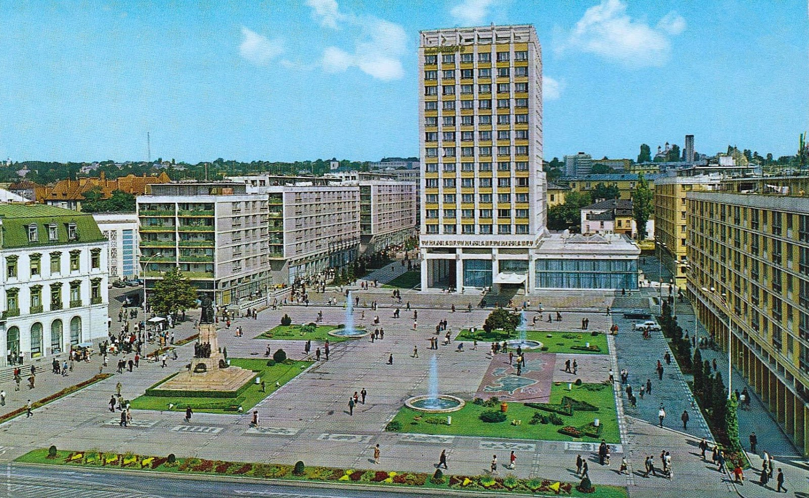
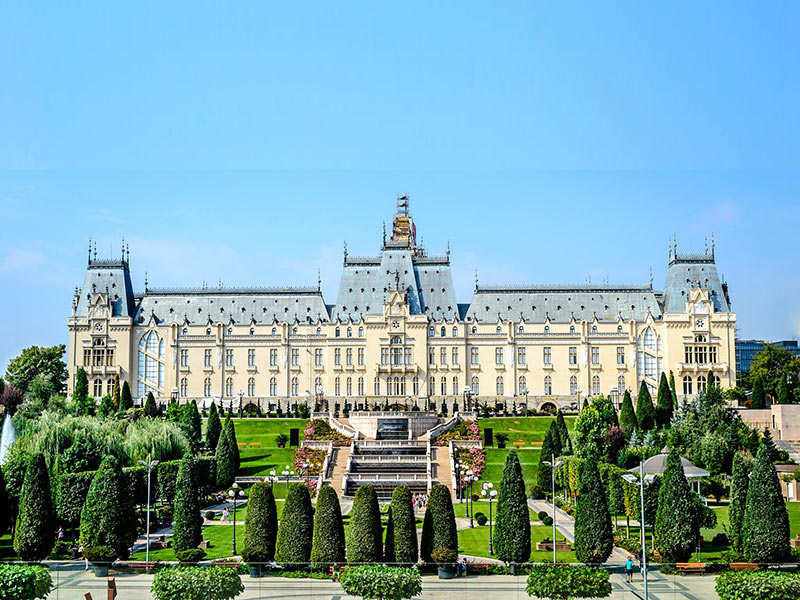
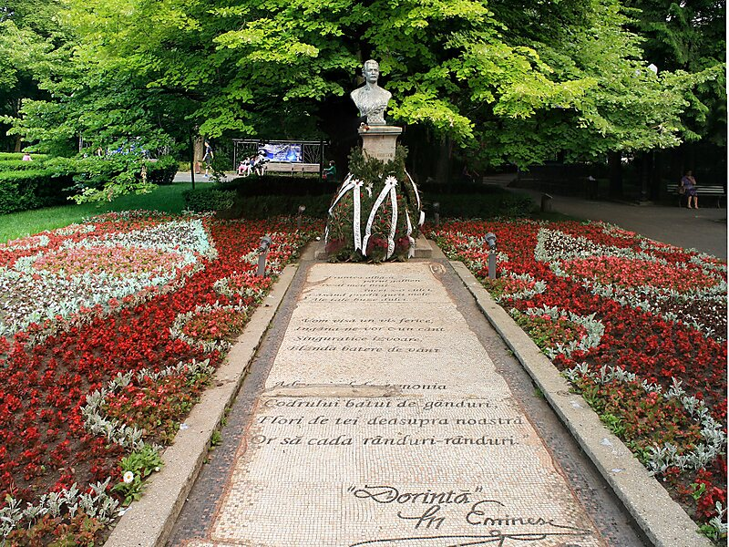

Iasi is one of the biggest cities of Romania, situated in the north-east part of the country. Built on 7 hills, just like Rome, it is a picturesque city, with nice architecture and dreamy, green landscapes. Throughout the history, Iasi has been the spiritual and cultural core of Moldavia, one of the historical regions of Romania.

- 1. Union Square
- Situated right in the heart of the city, the Union Square (Piata Unirii) was the obvious choice to start this list. It’s a central meeting point for both tourists and locals. This square has a deep historic meaning. On 24 of January 1859, on this very site the Romanian people performed the first dance of unity, symbol of the newly accomplished Union of Wallachia and Moldavia. The square is dominated by the imposing statue of Al. I. Cuza, the first ruler of the United Romanian Principalities. Remember his name, we’re going to visit his residence next, then his tomb a bit later.
- 2. Copou Park
- Copou Park is the oldest public park in Iasi. This park is the main reason why you should visit Iasi around June. As you walk down the alleys, you can see among other types of trees, like maple and ash trees, a lot of linden trees. You will definitely smell them too! For me, seeing them in bloom in Iasi is a somewhat similar to seeing blooming cherry trees in Japan. It’s a visual and olfactory heaven. One in particular, situated in the center of the park, caughts the eye. It is Eminescu’s Linden Tree, named after the lovey dovey guy we mentioned before, who used to sit in its shade and write his highly acclaimed romantic poems.
- 3. Palace of Culture
- The Palace has 298 large rooms with a total area of 34,236 m2, 92 windows in the front part of the building and another 36 inside the building. Decoratively, the central hall shows a figurative mosaic including various representations of a gothic bestiary, concentrically arranged: two-headed eagles, dragons, griffons, lions. The hall is superposed by a glass ceiling room, where initially a greenhouse was arranged. In spite of its archaic-looking design, the Palace was designed so to integrate modern materials and technologies. Thus, the stone blocks were replaced with light and much cheaper materials. Besides, some rooms were decorated using a special material licensed by Henri Coandă, under the name of bois-ciment and imitating the oak wood. Decorative ironmongery elements are also remarkable and they can be admired for instance on the doors of the Voivodes’ Hall. The building was also equipped with high-tech facilities for those times, such as electric lighting, heating, ventilation system, thermostat, vacuum cleaners, which were all directed from the machinery room, at the underground level. Taking also into account the 14 fires that affected the previous buildings, Berindei treated the wooden structure of the attic with an ignifugeous product called orniton, while for the roof he used a special material, named eternite.
- 4. The Hall of Lost Footsteps
- The Hall of Lost Footsteps (Sala Pasilor Pierduti) is located inside Al. I. Cuza University, the oldest university in the country. The Hall of Lost Footsteps is hardly ever mentioned in any travel guide of Iasi, but it is a well-known place among locals. As the name suggests, it is a long hallway, where you can find 19 murals painted by a renowned Romanian painter, Sabin Balasa. The murals depict Romanian legends and universal myths, as well as cultural references, in a cosmic manner, using a lot of vibrant shades of blue. The last category is represented mainly by illustrations of Eminescu’s world of poetry.
 
<------------------ Palace of Culture
Copou Park---------------------->